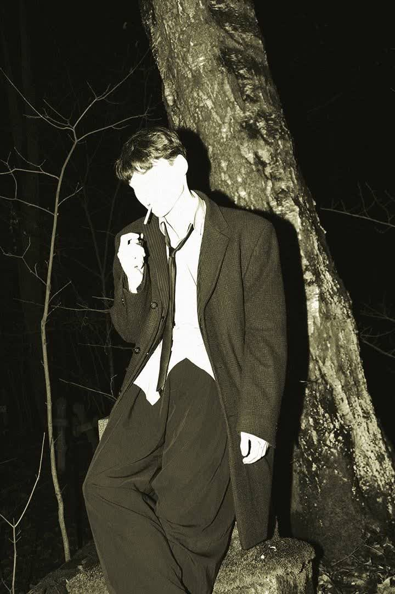
Видео: курящий парень в лесу
Сцена 1. Раскуривание сигареты в лесу
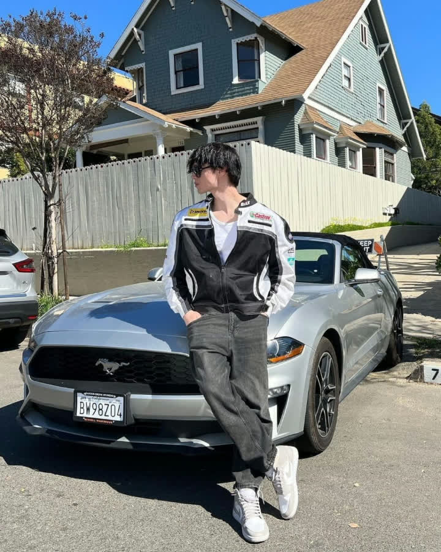
Black and white analog 35mm film photograph, heavy grain, high contrast, harsh on-camera flash, vintage cinematic look. Young East Asian man (exact character from the car photo): messy black hair with bangs over the forehead, pale skin, dark sunglasses, slim build. Wearing the same black-and-white racing jacket with Castrol / Dunlop / Bilt patches, white t-shirt, baggy dark jeans, white sneakers. He stands at night in a dark forest next to a thick textured tree trunk, one hand in his pocket, the other holding a cigarette to his lips, head slightly lowered, looking to the side. Bare branches and deep shadows in the background. Dramatic flash lighting, blown highlights on the face, strong hard shadows, moody atmosphere, analog film aesthetic.

Vintage analog VHS camcorder footage, 1980s-90s lo-fi aesthetic with heavy film grain, prominent scanlines, analog tracking errors, color bleeding, chromatic aberration, light leaks, and subtle handheld shake. Moody night-time dark forest, high-contrast lighting. Young man with messy dark hair, black sunglasses, vintage motorsport racing jacket (Castrol, Dunlop, Bilt logos), white t-shirt, dark jeans. Leaning against a thick textured tree trunk, thin branches in the background. He takes a cigarette, lights it with a visible lighter flame, brings it to his lips and inhales as smoke drifts. Slow cinematic zoom-in from medium shot to tight close-up of his face. He turns his head and looks directly into the camera with a cool, enigmatic expression, cigarette still in his mouth. Black-and-white vintage film look with analog color grading and VHS artifacts matching old tape recordings. Cinematic, atmospheric, slightly desaturated.
Сцена 2. Раскуривание сигареты с нижнего плана
Keep the exact person, clothes, sunglasses, tree and composition of @Image1. Match the vintage VHS motion, grain and camera feel of @Video1 and @Video2.
A black-and-white cinematic photograph, extreme low-angle worm’s-eye view with strong fisheye distortion and heavy circular vignette fading to black at the edges. Looking straight up at a young man with messy dark hair, black sunglasses, unzipped racing jacket (Castrol, Dunlop, Bilt logos), white t-shirt and jeans. He is lighting a cigarette, smoke curling around his face. Tall city buildings warp around him against an overcast sky. High-contrast grainy film look, dramatic lighting.
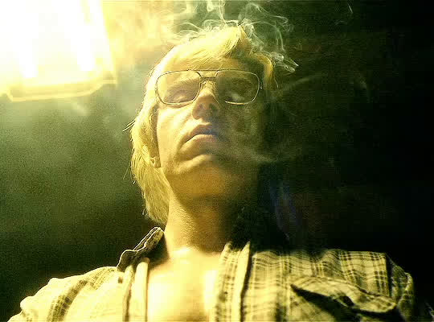
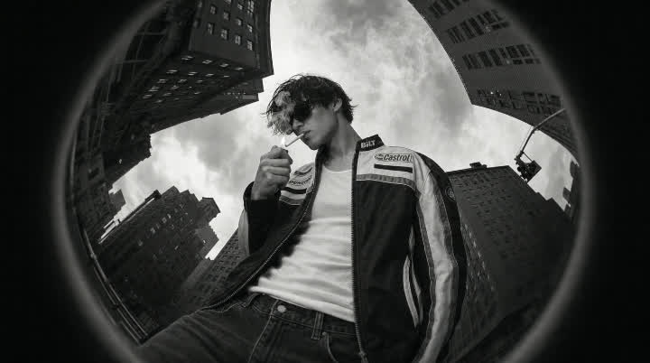
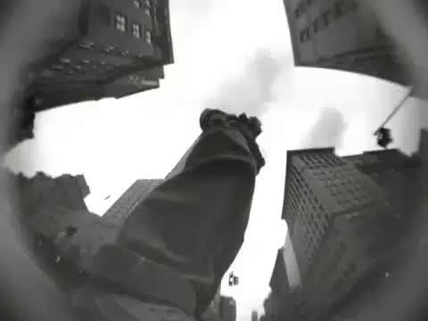
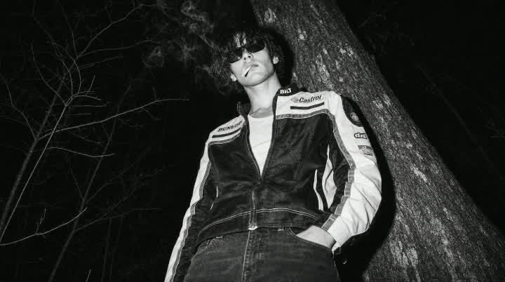
Black and white cinematic photo, young man with messy dark hair, black sunglasses, smoking a cigarette held to his lips with one hand, wearing a vintage racing jacket with Castrol, Dunlop, Bilt and other sponsor logos, white t-shirt, dark jeans, standing in a dark forest at night next to a large tree trunk, low-angle shot looking slightly upward, dramatic smoke, high contrast, grainy film look. Strong circular vignette with heavy darkening and fade to black at the edges, fisheye-style distortion around the frame like looking through a round lens or peephole, forest background filling the center. Moody, atmospheric, 35mm analog photography.
Black and white cinematic night scene, circular vignette, static camera locked on the original position. A young man in sunglasses, racing jacket with Castrol/Bilt patches, white t-shirt and jeans leans against a tree in a dark forest, taking a final slow drag from his cigarette. He exhales a thick cloud of smoke, flicks the cigarette to the ground, then pushes off the tree and walks away into the woods, disappearing into the darkness. Atmospheric, moody lighting, drifting smoke, realistic motion, 4K, film grain.
vintage analog 1980s photograph, a slim young man standing completely with his back to the camera, fully facing away, messy unkempt dark hair, wearing a two-tone motorsport racing jacket with Castrol Dunlop Bilt Yamaha logos, white t-shirt, dark denim jeans, one hand in pocket, sunglasses, leaning casually against a large textured tree trunk in a dark nighttime forest, high-contrast black-and-white 35mm film photography, heavy Kodak Tri-X grain, deep shadows, cinematic lighting, analog imperfections, VHS scanlines and slight color bleed, moody atmospheric 80s aesthetic, shot from behind, full body environmental portrait, photorealistic analog film look
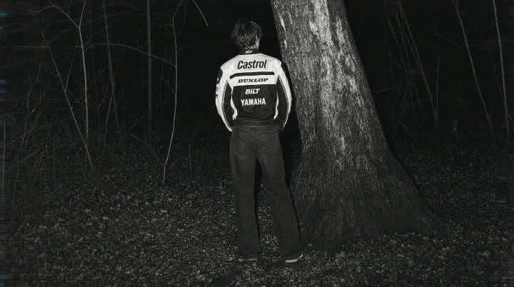
Black and white grainy analog 35mm film photograph, extreme circular vignette like a peephole / spyglass / round camera lens: the entire scene is contained inside a perfect circle in the center of the frame, surrounded by solid deep black, thin cyan-blue chromatic aberration ring along the circular edge, slight fisheye barrel distortion. Full-body side profile of a young man walking straight across the frame, mid-stride, viewed strictly from the side. Messy dark hair, black-and-white motorcycle racing jacket (white side panels, black center, sponsor logos Castrol, Dunlop, BILT, YAMAHA on the back), dark baggy jeans, white sneakers. Natural walking pose. Dark night forest from the reference: large rough-barked tree trunk, ground completely covered in fallen leaves, thin bare branches and twigs, high contrast, deep blacks, heavy film grain, analog nocturnal look. Slightly low environmental camera angle, lots of leafy ground in the foreground, character placed in the middle of the circular frame, cinematic analog still.
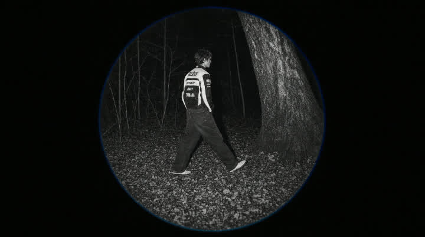
A young man with messy dark hair walking steadily through a dense dark forest at night, wearing a black-and-white racing bomber jacket with Dunlop / BILT / YAMAHA logos on the back, dark jeans and white sneakers. He moves from left to right toward a large thick tree trunk, ground covered in fallen leaves, tall thin trees in the background. Medium shot from behind and slightly to the side, tracking his movement. Strong circular vignette like a peephole or crystal ball: the entire scene is contained inside a perfect circle with heavy black borders and a thin blue rim, high-contrast grainy black-and-white film look. Casual slightly slouched walking gait with natural arm swing, similar to walking through tall grass. Dark moody cinematic atmosphere, low lighting, mysterious indie-film aesthetic. Smooth camera follow.
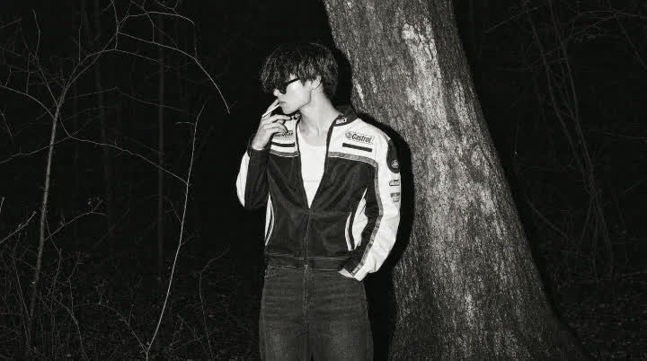
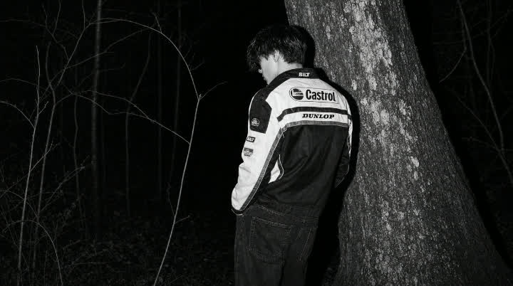
A photorealistic overhead bird's-eye view photograph (directly from above) of the young man from the reference photos, standing still. Messy dark hair, black sunglasses, cigarette in mouth. Black-and-white racing jacket with Castrol, Dunlop, Bilt and Yamaha logos (white panels and stripes visible from top), white t-shirt, dark jeans, white sneakers. One hand in pocket. He stands next to the large textured tree trunk in a dark nighttime forest with bare branches and fallen leaves covering the ground. High-contrast black-and-white, cinematic analog film grain, dramatic moody lighting, atmospheric, matching the style and character of the three photos.

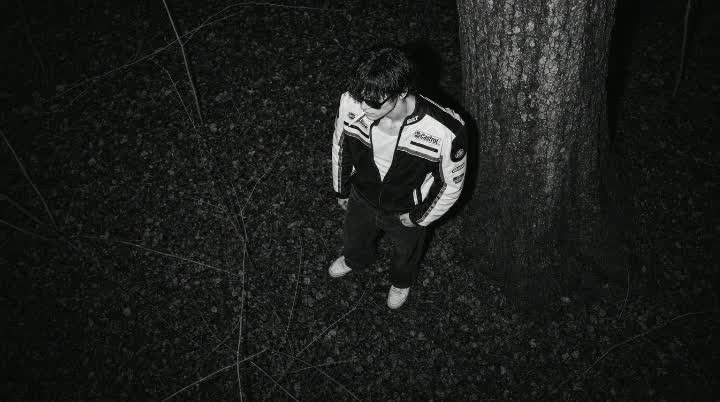
High-angle cinematic overhead shot from a concealed camera position behind a massive tree trunk in a dark nighttime forest. Dense woodland location with the ground completely covered in dry leaves, twigs and undergrowth matching the reference photograph exactly. The character is the young man from the photo: messy dark hair, black sunglasses, vintage black-and-white racing jacket with prominent Castrol and Bilt logos, white t-shirt, loose dark pants and white sneakers, cigarette hanging from his mouth. He walks through the forest with the exact same casual slouched gait, pace and body language as the figure in the reference video. Camera peeks from behind the tree with branches and foliage in the extreme foreground creating a hidden voyeuristic composition. Fast rapid frame switching and quick cuts identical to the reference clip. Dramatic high-contrast black-and-white cinematography, moonlight filtering through the canopy, deep shadows, grainy filmic atmosphere, mysterious and moody.
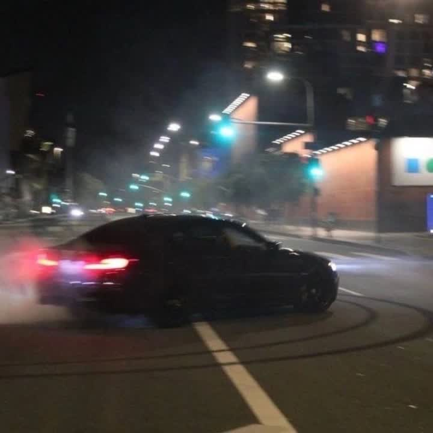
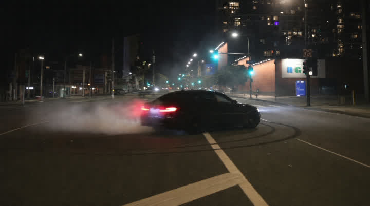
black and white analog VHS camcorder / grainy CCTV night-vision footage of a dark sedan drifting and burning out on an empty city intersection at night, thick white tire smoke billowing from the rear, glowing taillights, urban street with white road markings, streetlights and distant buildings. heavy analog video noise, film grain, scanlines, light blooming, motion artifacts, low resolution, high contrast, desaturated monochrome with slight greenish night-vision tint, 80s-90s security camera aesthetic, vintage tape damage, dark shadows, cinematic low-light look.
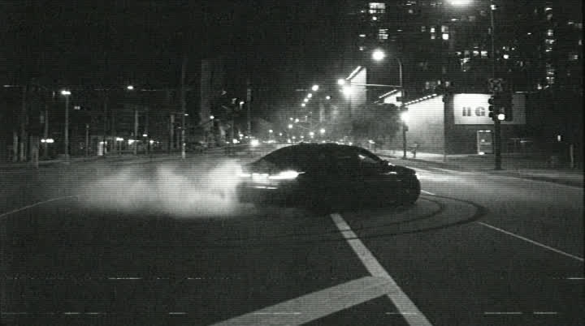
A cinematic nighttime urban street scene matching the reference photo: a dark sedan performs a dramatic high-speed drift across an empty intersection, rear tires spinning with thick billowing white smoke, headlights cutting through the darkness and taillights glowing, city lights and street lamps in the background. The sequence starts with a wide/medium shot of the full drifting motion, then a smooth accelerating cinematic zoom-in (dolly zoom) towards the car, getting closer to capture the sliding vehicle, smoke, and details of the drift. High contrast, moody lighting, realistic motion, 4K, 24fps.
Референсы: - Вложение 1 → @Image1 → чёрная BMW (кузов, цвет, колёса, задняя часть) - Вложение 2 → @Image2 → CCTV-локация, ракурс камеры, зерно, разметка ``` 5-second video. Vehicle locked only to @Image1 (the black BMW reference): a black BMW sedan with the same body, wheels, and rear design. World locked only to @Image2 (the CCTV location reference): the same night intersection, zebra crossing, sidewalks, poles, traffic lights, and analog surveillance look. The white car from @Image2 is gone and is never shown. CAMERA THROUGHOUT: fixed elevated CCTV camera matching @Image2; no pan, tilt, or zoom. LIGHT AND TEXTURE: night streetlamps, analog CCTV grain, highlight bloom, dark wet asphalt, red taillight glow; monochrome surveillance grade matching @Image2. 0–1.5s — The intersection from @Image2 (the CCTV location reference). On the zebra, the black BMW from @Image1 (the black BMW reference) sits in the original car’s place, rotated 180 degrees so the trunk, rear bumper, and taillights face the camera and the nose points away down the road. Taillights on. The BMW begins rolling slowly away from the camera. 1.5–4s — Continuity. The BMW keeps moving away across the crosswalk, rear s
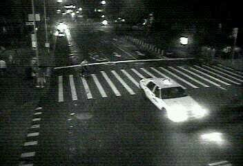
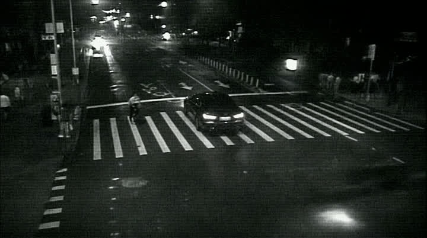
Референсы: - Вложение 1 → @Image1 → стартовый кадр ``` 5-second video. Use @Image1 (the start-frame reference) as the exact first frame. Preserve the high-angle night intersection, wet asphalt, zebra crossing, streetlights, sidewalk pedestrians, and the dark sedan’s identity, body, scale, and starting place. The sedan is the only vehicle that moves, and it must recede from the camera into the far street — never approach the lens. CAMERA THROUGHOUT: fully locked static high-angle CCTV camera. No pan, no tilt, no roll, no zoom, no tracking, no reframing. LIGHT AND TEXTURE: night street lighting, wet-road specular streaks, consistent headlight glow on asphalt. 0–1s — Opening is exactly @Image1 (the start-frame reference). High-angle wide view of the crossing. The dark sedan immediately surges and accelerates along the roadway away from the camera, traveling into the depth of the street toward the distant lights, shrinking in the frame. 1–4s — Continuity from the prior beat. The sedan races away from the lens along its lane, receding up the street into the background, growing smaller as it speeds toward the far traffic glow. Wet reflections streak with the motion. The person on th
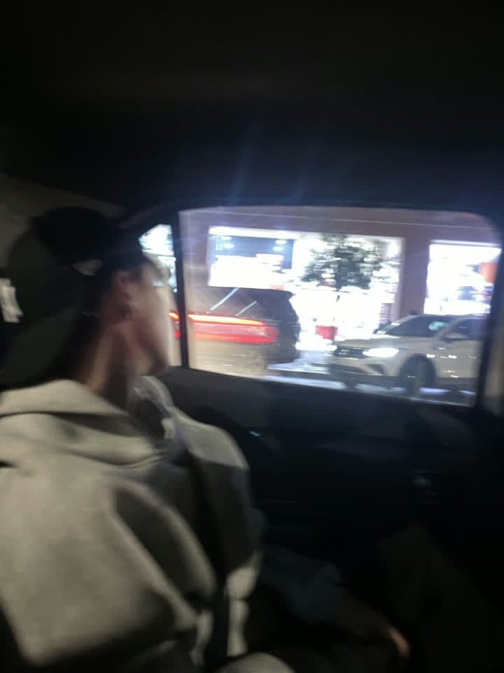
Референсы: - Вложение 1 → @Image1 → локация, композиция салона и вид из окна - Вложение 2 → @Image2 → лицо, волосы, очки и одежда персонажа ``` 5-second video. The young man takes face, messy dark hair, dark sunglasses, black-and-white racing jacket with Castrol, Dunlop and Bilt logos, white t-shirt and jeans only from @Image2 (the character reference). The dark car cabin, rectangular side window, night street beyond the glass, wet asphalt, storefront lights, parked white sedan, red taillight smear and the back-seat camera angle come only from @Image1 (the location and composition reference). Do not keep the hoodie, cap or face from @Image1. Do not keep the forest, tree or standing pose from @Image2. The young man sits inside the parked car at night, body turned toward the side window, gaze held on the street. He stays seated; a slow breath; his head eases a fraction closer to the glass. CAMERA THROUGHOUT: handheld hold from the back seat, slightly behind and to the left of him, medium shot, eye-level, faint tremor, never crossing his body or the door. LIGHT AND TEXTURE: black-and-white night still, grain, slight motion blur and soft focus matching the softness of @Image1, wind

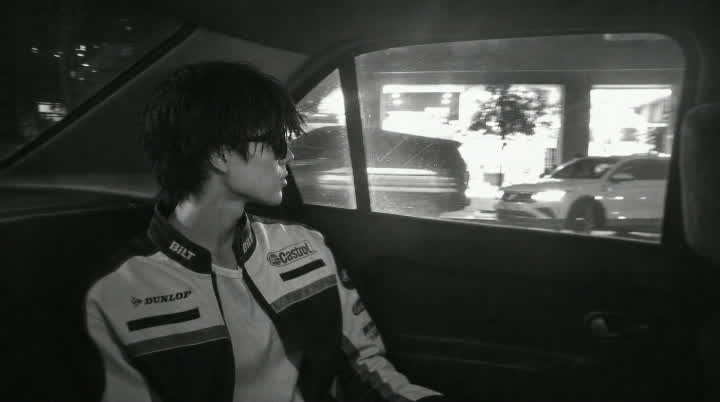
Референсы: - Вложение 1 → @Image1 → стартовый кадр (персонаж, одежда, салон, ночной вид из окна, композиция) ``` 5-second video. Use @Image1 (the start-frame reference) as the exact first frame. Lock identity, messy dark hair, sunglasses, racing jacket with visible sponsor patches, back-seat pose, car interior, side-window view, and black-and-white night look from @Image1 (the start-frame reference). Do not change the face, body, or wardrobe. The car is already moving and now surges to extreme speed, about 300–350 km/h. G-force slams the passenger into the seat: torso sinks deep into the backrest, shoulders pin back, head presses rearward, jaw tightens, hair and jacket zipper jitter in short violent bursts. His whole body rattles with chassis vibration. He stays seated, looking toward the window, pressed and shaken. CAMERA THROUGHOUT: same three-quarter back-seat medium shot as @Image1 (the start-frame reference), seated eye-height, camera locked to the cabin but transmitting heavy high-frequency vehicle shake and tiny handheld drift; no pan off the subject, no cut, never leave the interior. LIGHT AND TEXTURE: night city lights and headlights smear into long horizontal streaks
Сцена 3. Рыбий глаз + ходьба по лесу
Сцена 4. Ходьба сверху
Сцена 5. Сцена где парень в машине + прижим к креслу
Сцена 6. Дрифт
Сцена 7. Видео с CCTV + проезд машины